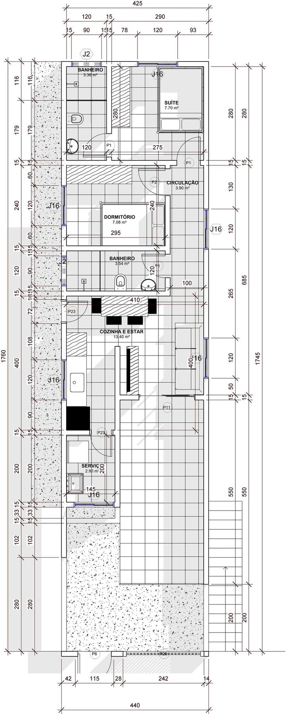
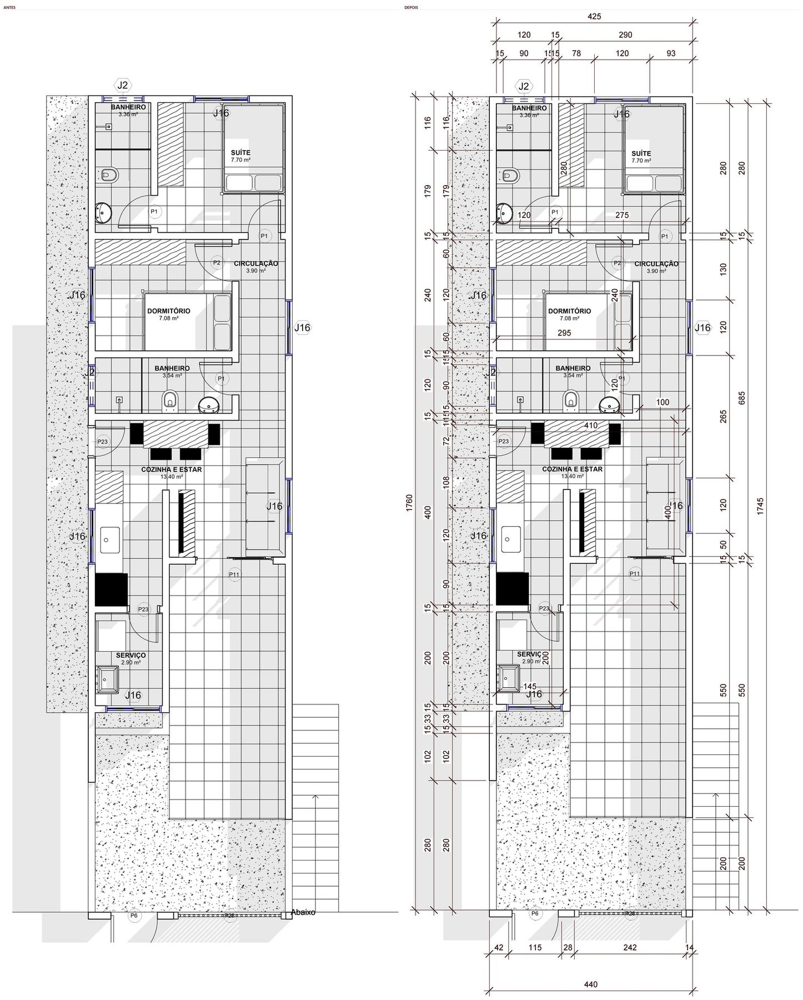
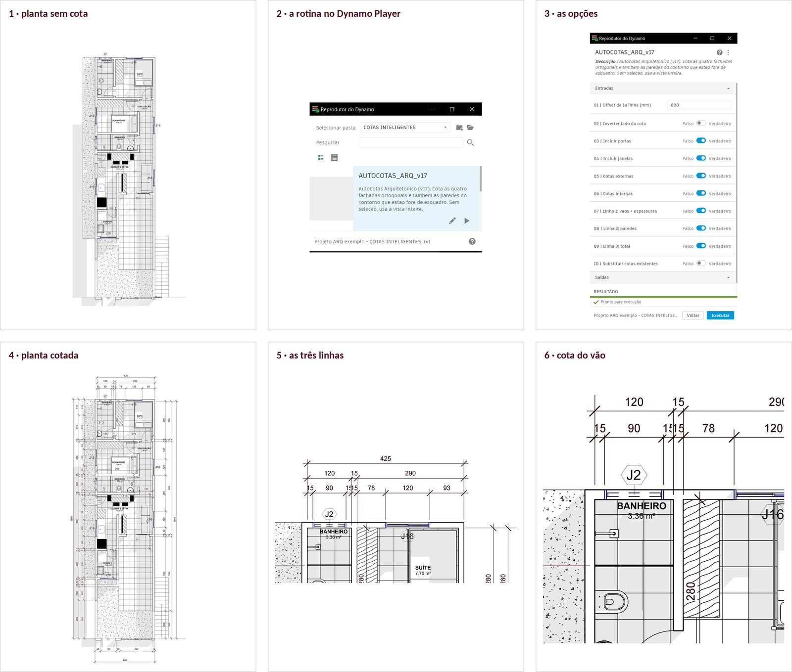
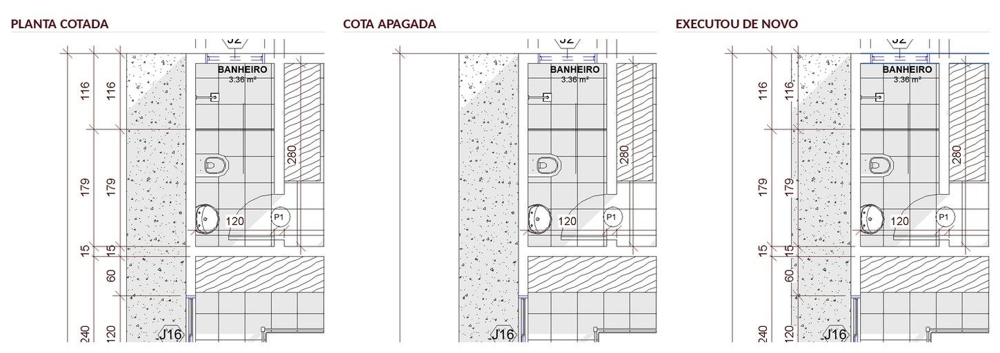
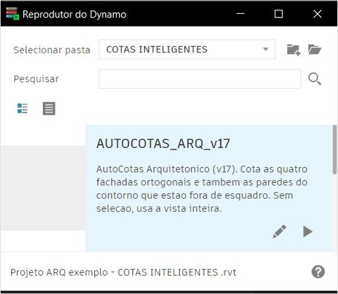
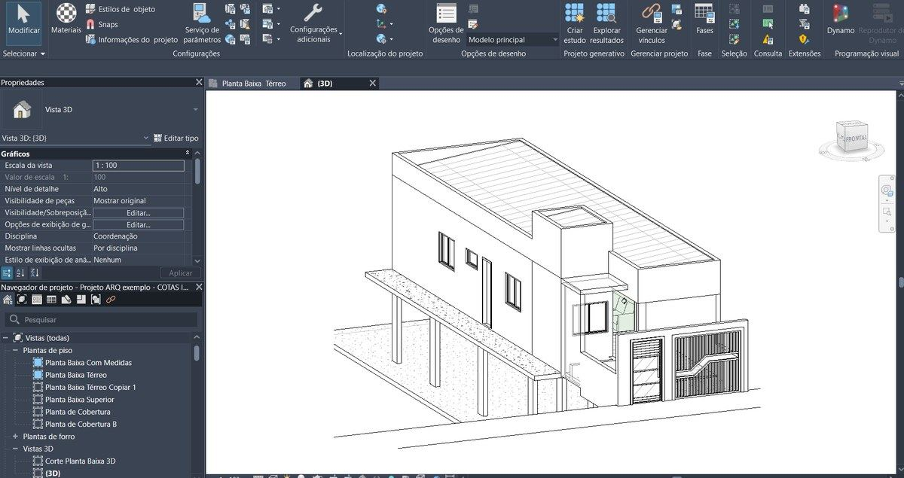
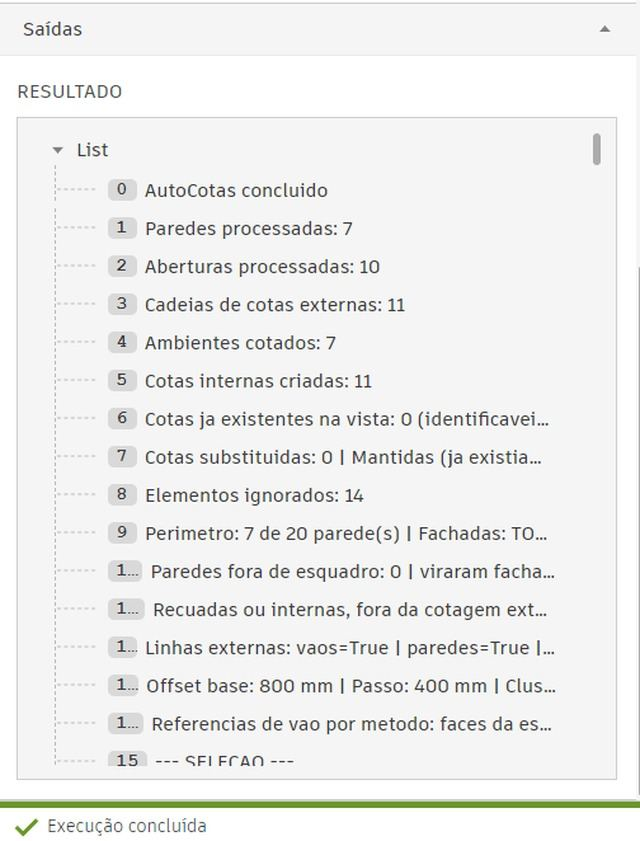

Um arquivo que você salva uma vez e executa pelo Dynamo Player. Instala e usa hoje — sem abrir o Dynamo.
“Pra função delas, que são cotas mais em comum que todo projeto precisa, funcionaram muito bem.”
Pedro Gonzaga, arquiteto

Abri uma planta arquitetônica sem cota nenhuma, apertei play e cronometrei até o RESULTADO aparecer. Sem selecionar nada, sem configurar nada.

Da planta limpa até a planta cotada, com as três linhas escalonadas e o afastamento que você definiu. Porta e janela saem cotadas pelas extremidades do vão — não pelo eixo.

Não é lentidão sua. É execução repetitiva que não precisava passar pela sua mão.
Se quiser cotar só um trecho, seleciona as paredes antes. O resto é igual.
| Na mão | Com a rotina | |
|---|---|---|
| Começar | Ativa a ferramenta, escolhe a face, posiciona a linha | Abre a planta e aperta play |
| Vãos | Clica extremidade por extremidade, porta por porta | Todas as portas e janelas na mesma passada |
| Miolo da planta | Ambiente por ambiente | Junto com as externas, na mesma execução |
| Padrão | Depende de você lembrar o critério a cada planta | Mesmo critério em todas as plantas |
| Revisão | Refaz o trecho na mão | Executa de novo e ela completa o que falta |
A diferença não é o resultado. É o caminho até ele.
Ela reconhece as cotas que criou e refaz só o que está faltando.
Entrou uma janela nova na revisão? Mesma coisa: executa e ela completa o trecho.
E a cota sai no estilo que já está no seu template. Não vem com padrão próprio.


Cotas externas e internas na mesma execução. Você instala e roda no mesmo dia — a rotina aparece na lista do Dynamo Player e você aperta play.
Curto e direto. Onde salvar o arquivo, como apontar a pasta no Player, como fazer a primeira execução. Você lê e usa.

Você roda a rotina em um projeto pronto antes de usar no do cliente. Vê como funciona sem risco nenhum — e depois usa em qualquer projeto seu.
ou parcelado no cartão
Quero a rotina prontaAcesso vitalício, com as versões novas inclusas. Compra única, sem assinatura.
Garantia de 7 dias pela Hotmart.
Se a rotina der erro, cola aqui o conteúdo do RESULTADO que aparece no Dynamo Player. Ele traz o código da falha e onde parou — com isso eu resolvo direto.
